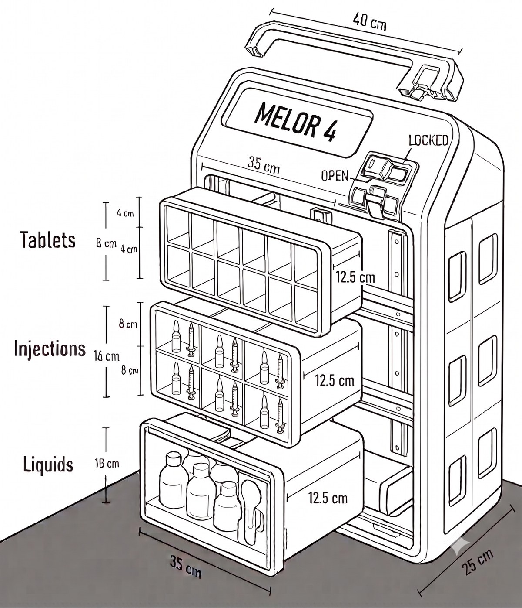

01 — Physical
Susun atur troli sistematik mengikut kategori ubat
01 — Physical
Susun atur troli sistematik mengikut kategori ubat

02 — Digital
Status troli dikemaskini automatik pada setiap imbasan

03 — Live
Rekod dan status troli merentasi wad dalam masa nyata
One innovation. Two connected components.
Fast Logistics & Alert Medication (YAN Network)
Integrated floor-stock trolley + real-time medication tracking
FLAMYNGo connects a systematic medication trolley with a real-time notification workflow, giving pharmacy and wards clearer visibility from preparation to collection.
Lihat perjalanan inovasi02 The Problem
Medication logistics should not depend on guesswork.
Pengurusan floor stock sebelum ini bergantung kepada penyimpanan fizikal yang kurang tersusun dan semakan manual. FLAMYNGo bermula daripada masalah operasi yang sebenar — bukan sekadar mahu menghasilkan aplikasi baharu.
Old workflow
Penyimpanan
Ubat oral, IV dan cecair tidak mempunyai pemisahan fizikal yang sistematik, meningkatkan risiko kekeliruan dan kesilapan pengendalian.
Visibiliti
Status troli bergantung kepada telefon atau semakan fizikal. Ini menyukarkan staf mengetahui sama ada troli sedang dihantar, sedang diisi atau sudah tersedia.
Masa Operasi
Data baseline projek merekodkan masa counter-check farmasi dan jururawat melebihi 15 minit.
Data projek berdasarkan pembekalan floor-stock kepada Unit Kecemasan dan Wad Melor 1–4.
03 The Innovation
Physical
Troli floor-stock disusun semula secara sistematik mengikut kategori ubat — mengurangkan kekeliruan dan risiko pengendalian di wad.
Digital
Sistem notifikasi digital menghubungkan wad dan farmasi — status troli boleh dilihat serta-merta, tanpa perlu semakan fizikal.
Connected workflow
Satu QR yang sama menghubungkan komponen fizikal dan digital di sepanjang aliran kerja ini.
04 Physical
Koper FLAMYNGo™ — 40 × 35 × 25 cm, dibina bersama Lembaga Kemajuan Wilayah Kedah (KEDA), disusun kepada tiga zon terasing mengikut kategori ubat.
Koper FLAMYNGo™ — 40 × 35 × 25 cm, 3 zon kod warna

Susun atur kompartmen mengikut kategori ubat
Ubat oral disusun berasingan daripada IV dan cecair untuk mengelakkan kekeliruan pengendalian.
Ubat suntikan disimpan dalam ruang khusus, mengurangkan risiko pencampuran dengan ubat oral.
Cecair dan ubat memerlukan sejukan diasingkan mengikut keperluan penyimpanan yang betul.
Lakaran teknikal berdasarkan dokumentasi seni bina penyelesaian projek (Koper FLAMYNGo™, fabrikasi bersama KEDA).
05 Digital
Troli dihantar dari wad. Kod QR diimbas untuk mendaftarkan troli dan mula aliran kerja.
Troli diisi semula di farmasi. Status dikemaskini kepada "Pengisian ubat selesai."
Wad dimaklumkan. Setelah diambil, status disahkan sebagai "Troli ubat telah diambil."
Status troli yang dilihat oleh staf wad, dikemaskini automatik
06 Live Data
Every movement leaves a digital trail.
Dashboard troli ubat sebenar — rekod dan status masa nyata
Notifikasi masa nyata setiap kali status troli berubah.
Paparan status semua troli merentasi wad dalam satu skrin.
Jejak pergerakan troli mengikut urutan masa yang tepat.
Rekod setiap imbasan QR disimpan untuk audit dan semakan.
Ringkasan trend dan prestasi operasi dari semasa ke semasa.
Akses kepada sistem operasi sebenar diuruskan berasingan daripada showcase ini, dan boleh disediakan untuk tujuan penilaian atas permintaan.
07 Impact
Tempoh pengukuran: 15–21 Ogos 2026. Data ini merupakan hasil awal fasa pilot projek.
08 ROI / Cost-Effectiveness
[ROI calculation — data pending]
Nilai kos-keberkesanan penuh FLAMYNGo masih dalam pengukuran. Bahagian ini menggariskan kaedah dan kategori yang akan dinilai — bukan angka rekaan.
Kos sekali sahaja untuk pembinaan / pengubahsuaian troli fizikal.
Data pendingKos berterusan sistem QR dan penyelenggaraan notifikasi digital.
Data pendingPerbandingan masa semakan manual sebelum dan selepas FLAMYNGo.
Data pendingPerubahan kadar pecah, tumpah atau kesilapan ubat bulanan.
Data pendingTempoh dianggarkan untuk kos pelaksanaan pulih melalui penjimatan operasi.
Data pendingAngka ROI sepenuhnya memerlukan tempoh pengukuran yang lebih panjang dan akan diterbitkan sebaik disahkan.
09 Replicability
Konseptual — mewakili haluan replikasi yang mungkin, bukan pelaksanaan sebenar yang telah disahkan.
Reka bentuk troli modular boleh disesuaikan mengikut kombinasi ubat wad berbeza.
Aliran kerja berasaskan QR tidak memerlukan perkakasan proprietari — mudah diguna pakai unit lain.
Konsep boleh diskalakan daripada satu wad kepada rangkaian seluruh hospital.
Prinsip visibiliti masa nyata terpakai kepada mana-mana aliran kerja logistik ubat, bukan floor stock sahaja.
10 Roadmap
Reka bentuk awal troli dan aliran kerja digital.
Pengukuran fasa awal — 15–21 Ogos 2026.
You are herePengesahan data merentasi tempoh dan wad yang lebih luas.
Pelaksanaan ke wad dan unit tambahan.
Adaptasi kepada hospital dan aliran kerja logistik lain.